학생 등록
학생 진행학생 등록 시스템에서 계정을 만들고 신청서를 작성합니다. 가장 먼저 진행해야 하는 단계입니다.
-
1
신청서 시작 — 이메일 입력
학생 등록 시스템(lcic-students-system.com/application/request/kr)에 접속하여 본인 이메일을 입력하고 제출을 누르면, 등록한 이메일로 신청 링크가 발송됩니다.
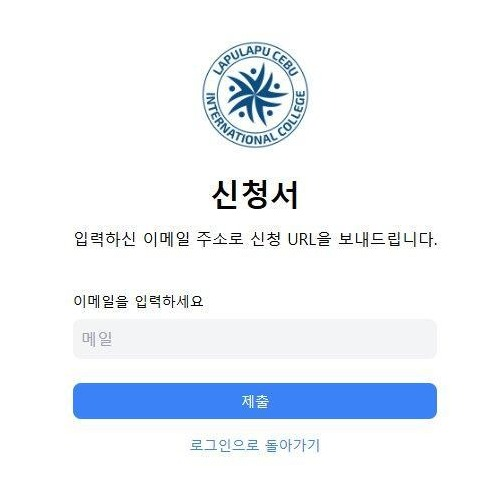
신청서 첫 화면 — 이메일 입력 후 제출스팸함 확인 · 메일이 안 보이면 스팸함 또는 프로모션함도 확인해주세요. -
2
메일에서 신청 링크 클릭
받은편지함에서 LCIC 발신 「Continue Your Application」 메일을 열고, 본문의 Continue Application 버튼을 클릭합니다.
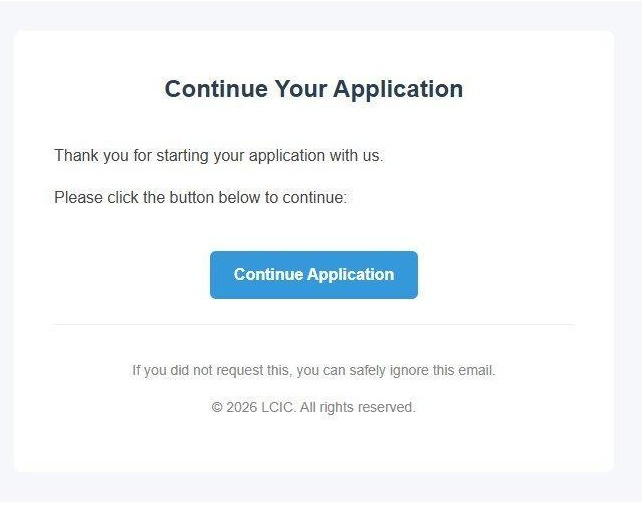
받은 메일에서 Continue Application 클릭 -
3
Step 1 — 기본 정보 입력
이름과 여권 정보(여권 번호·발행일·유효기간)를 입력합니다. 빨간색 항목이 직접 입력해야 하는 부분입니다.
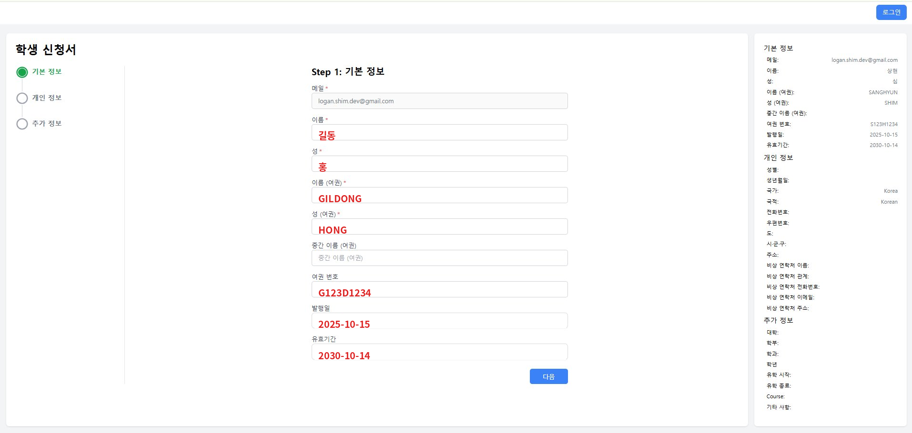
Step 1 — 이름·여권 정보 입력주의 · 여권 영문명은 여권에 기재된 그대로 입력해야 합니다. 오타가 있으면 비자 발급에 문제가 발생할 수 있습니다. -
4
Step 2 — 개인 정보 입력
성별·생년월일·주소·비상 연락처를 입력합니다.
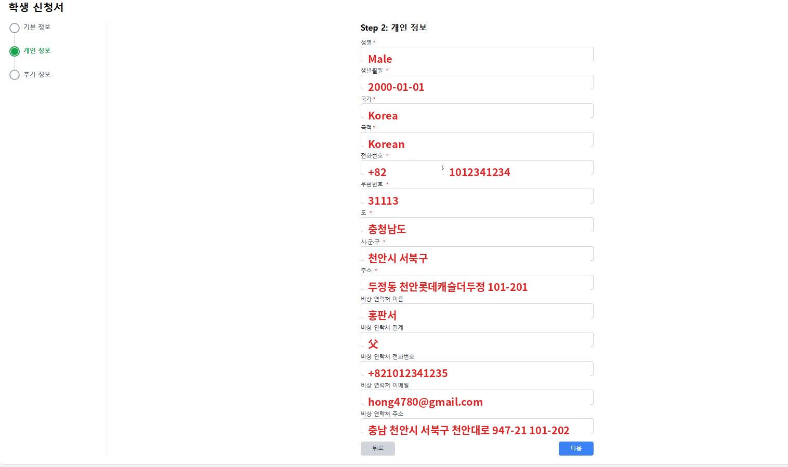
Step 2 — 개인 정보 + 비상 연락처비상 연락처 · 한국에서 연락 가능한 가족·보호자 정보를 입력하세요. 긴급 상황 시 학교가 연락하는 채널입니다. -
5
Step 3 — 추가 정보 및 약관 동의
본인의 대학 · 학부 · 학과 · 유학 시작일 · 유학 기간 · 코스를 선택합니다.
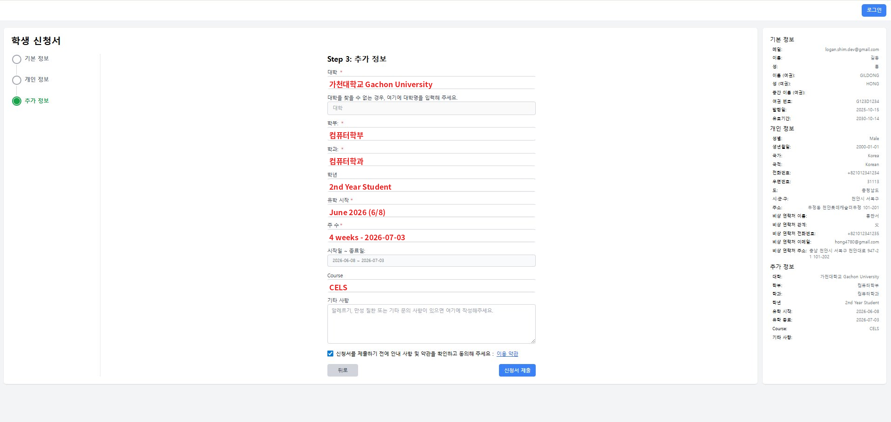
예시일 뿐이에요. 본인 일정에 맞춰 정확히 입력해주세요Step 3 — 추가 정보 입력 + 약관 동의유학시작일 · 본인의 실제 입국·입실 일정에 맞춰 정확하게 입력해주세요. 시작일이 잘못 입력되면 반 배정, 비자, 픽업 등 이후 절차에 문제가 생길 수 있습니다. 약관 동의 절차
1 [이용 약관] 클릭 → 내용 확인 2 동의 체크 3 [동의하고 다음으로] 4 본 화면 하단 체크박스 확인 5 [신청서 제출] → 최종 제출주의 · 제출 후 학교 관리자 승인 절차가 진행됩니다. 제출 전 우측 패널로 입력 내용을 다시 한번 확인하세요. -
6
학생 계정 정보 수신
제출 완료 후, 등록한 이메일로 「Your Student Account Credentials」 메일이 자동 발송됩니다. 임시 비밀번호는 첫 로그인 후 반드시 변경하세요.
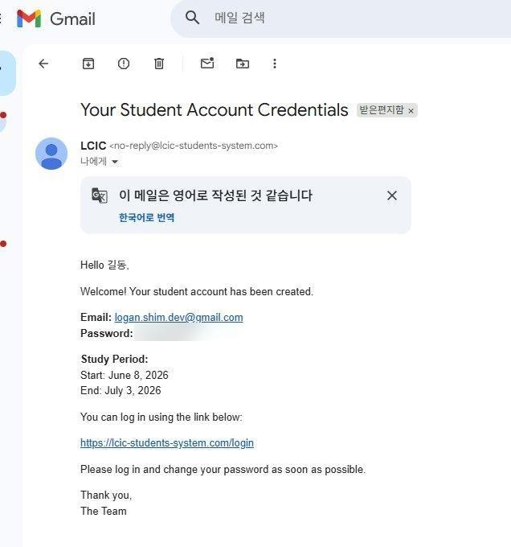
계정 발급 메일 — 임시 비밀번호 + 로그인 링크 포함 -
7
학생 포털 로그인
lcic-students-system.com/login에 접속하여, 이메일(또는 학번)과 메일에서 받은 임시 비밀번호로 로그인합니다. 비밀번호 분실 시 Recover Password로 재설정할 수 있습니다.
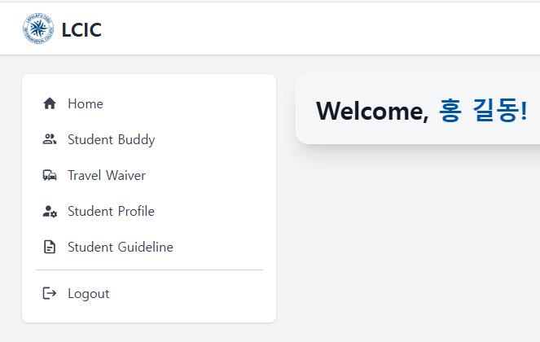
로그인 후 학생 대시보드등록 완료 · 로그인 후 대시보드(Home · Student Buddy · Travel Waiver · Student Profile · Student Guideline)에 접근 가능합니다.
※ 화면 디자인은 시스템 업데이트로 일부 달라질 수 있습니다. 추가 문의는 궁금한 사항 페이지를 참고해주세요.
서류 업로드
학생 진행학생 등록을 완료한 뒤, 입학에 필요한 서류 5종을 학생 포털에 업로드합니다.
-
1
EFSET 사이트 접속 → 90분 테스트 선택
아래 링크를 통해 EFSET 홈페이지에 접속합니다.
https://www.efset.org상단 메뉴에서 Our Tests → 4 skills (90 min)을 선택합니다.
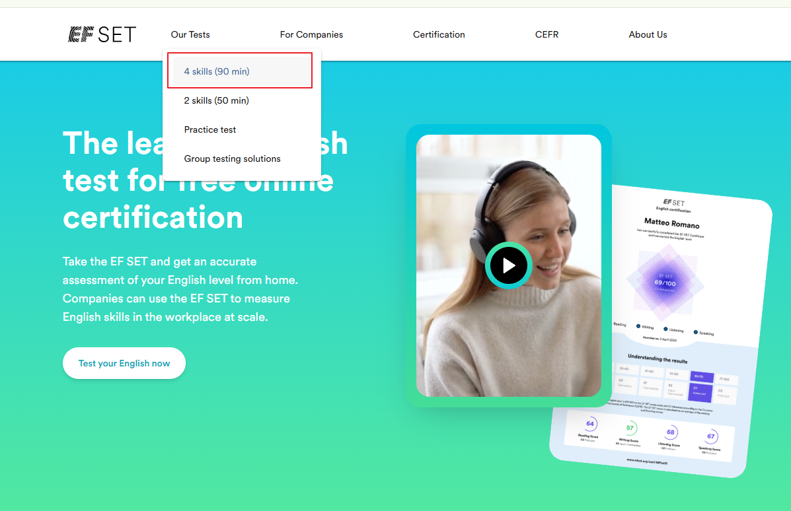
"Our full English test · 90 MIN EF SET" 안내가 보이면 Start the test 버튼을 누릅니다.
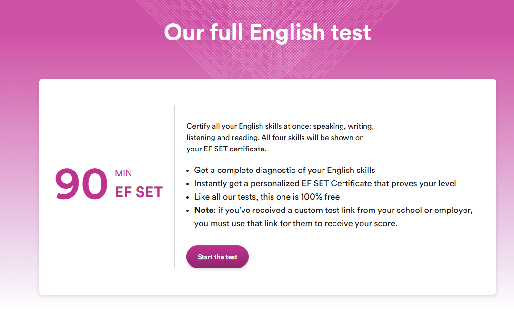
주의 · EF SET은 90일에 1회만 응시할 수 있습니다. 이전에 응시한 적이 있다면 아래와 같이 "Come back soon" 안내가 표시됩니다. 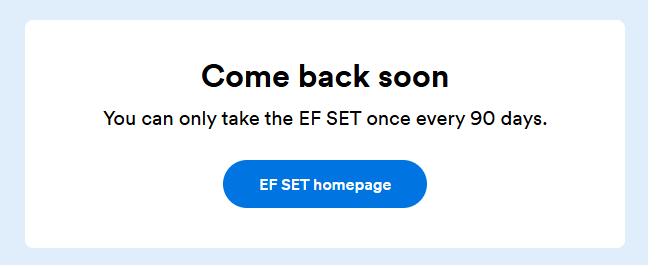
EF SET 응시 후 90일 이내 재접속 시 표시되는 화면 -
2
시험 안내 확인
총 4영역 Reading 20분 · Listening 20분 · Writing 35분 · Speaking 15분, 약 90분 소요됩니다. 안내문을 확인한 뒤 Next를 누릅니다.
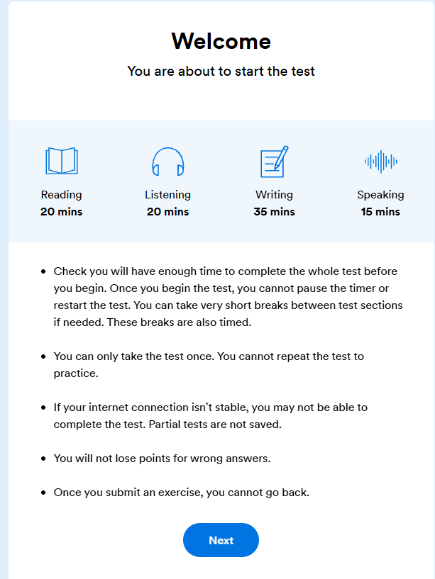
핵심 주의사항 · 시작 후 타이머는 멈출 수 없고 단 1회만 응시 가능합니다. 인터넷이 끊기면 시험이 저장되지 않으니 안정적인 환경에서 응시하세요. -
3
계정 만들기 (Configure your account)
First name · Last name(EF SET certificate에 표시됨), Email address(결과 수신 주소, 한번 입력하면 변경 불가)를 입력합니다. Phone은 선택입니다. Privacy Policy 동의 후 Proceed.
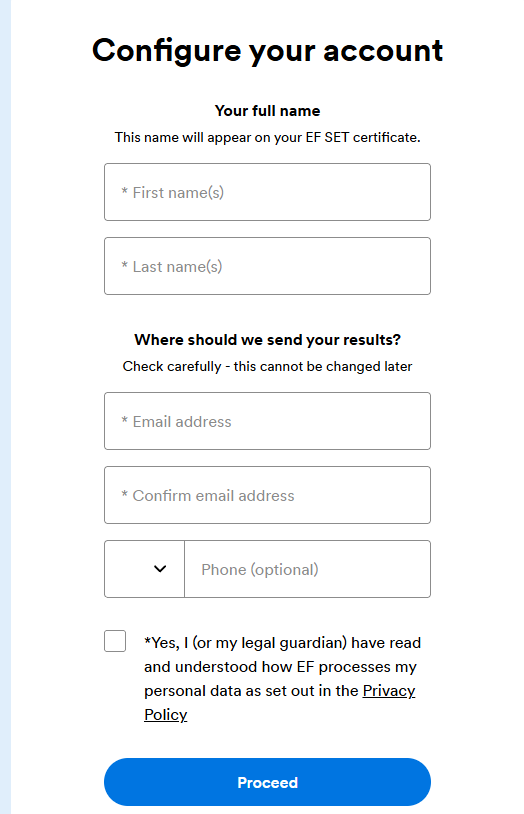
이름은 여권과 동일하게 입력하세요. Certificate에 그대로 인쇄되며 LCIC에서도 동일 표기를 사용합니다. -
4
시험 응시 — 준비물 확인
4영역 시험을 차분히 끝까지 응시합니다.
준비물 · 헤드셋 또는 이어폰(Listening용), 마이크(Speaking용). 조용한 공간에서 응시하세요. -
5
점수 확인 (Your score explained)
시험 종료 후 EF SET 점수와 CEFR 등급(A1~C2)이 표시됩니다. Reading·Listening 영역별 점수와 등급 해석도 함께 보입니다.
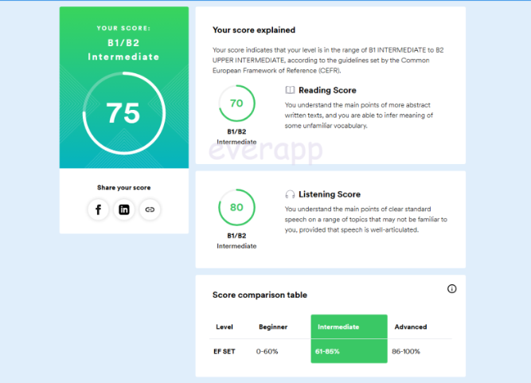
-
6
Certificate 다운로드
Certificate를 다운로드(PDF) 받거나 화면 캡처로 저장합니다. 이 파일은 옆 서류 업로드 탭의 레벨 테스트 자료 단계에서 업로드합니다.
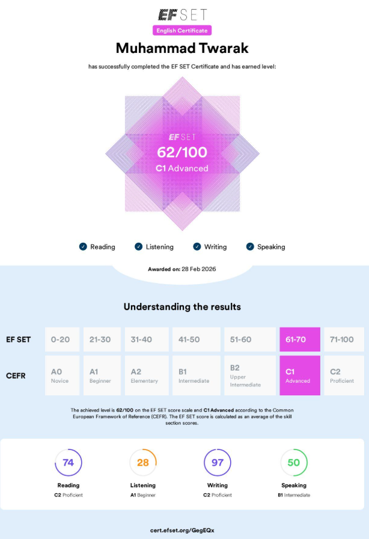
다음 단계 · 아래 버튼을 누르면 서류 업로드 탭으로 바로 이동합니다.
마이페이지 접속 → Student Profile
학생 마이페이지에 로그인한 뒤 좌측 메뉴에서 Student Profile을 클릭합니다.
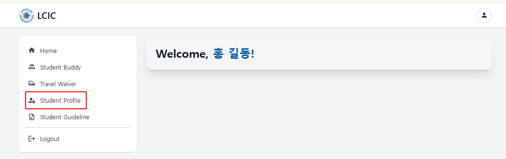
Submission 탭 → 여권 사본 업로드 (Passport Information)
상단 Submission 탭으로 이동 후 Passport Information 영역에 여권 인적사항 면을 업로드하고 아래 정보를 입력합니다.
- 여권 사진 면 이미지 (Click to upload · 최대 20MB)
- Passport Number · Date of Issue · Expiration Date
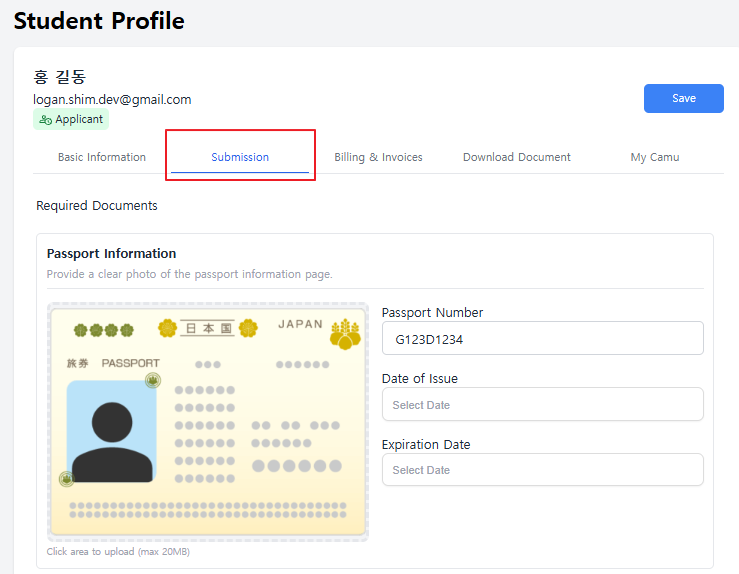
왕복 항공권 업로드 (E-ticket)
E-ticket(출국편)과 E-ticket — Return Flight(귀국편) 각각 PDF/스크린샷을 업로드하고 항공편 정보를 입력합니다.
- Flight Number
- Departure Date / Arrival Date
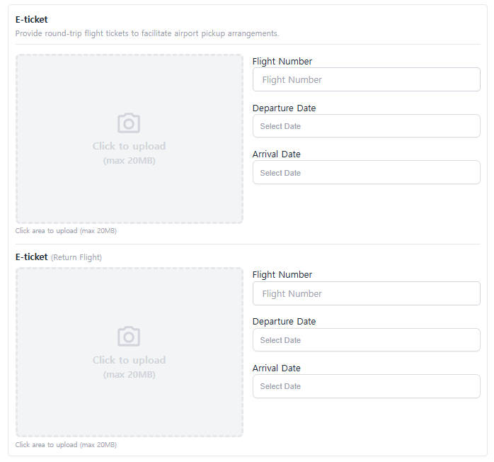
레벨테스트 자료 업로드 (Entrance Exam)
Entrance Exam 영역에서 Attach File을 클릭하여 EF SET Certificate(PDF/이미지)를 첨부하고, Pre-study test results에서 본인 점수에 해당하는 레벨을 선택합니다.
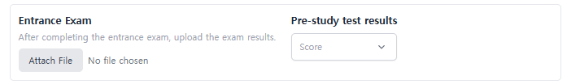
본인 사진 + 보험 증명서 업로드 (ID Photo · Insurance Certificate)
ID Photo 영역에 학생증 발급용 2 x 2 inch 정면 사진을 업로드합니다. 같은 화면 하단의 Insurance Certificate에는 해외여행자 보험 증명서를 첨부합니다.
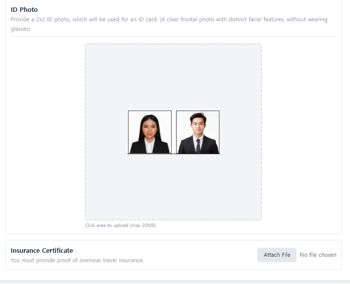
※ EF SET 사이트에서 "Come back soon — You can only take the EF SET once every 90 days." 안내가 뜨면 90일 경과 후 재응시 가능합니다.
※ 모든 서류는 PDF 또는 이미지(JPG/PNG) 형식 · 파일당 최대 20MB.
레벨 배정 완료
LCIC 처리LCIC 어학팀이 제출하신 레벨 테스트 자료를 검토하여 적합한 클래스 레벨을 배정해드립니다.
수강 신청
학생 진행배정받은 레벨에 맞춰 수강 과목을 선택합니다. 정규 수업 외에도 선택 과목이 마련되어 있으니 학생 등록 시스템에서 안내에 따라 신청해주세요.
버디 신청
도착 1주 전출국 1주일 전까지 버디(buddy)를 신청해주세요. 현지 적응을 도와줄 LCIC 재학생 또는 현지 학생이 매칭되어, 도착 후 학교생활 정착을 지원합니다.
-
1
학생 시스템 로그인 → Student Buddy 메뉴 진입
학생 등록 시 본인이 등록한 계정으로 학생 시스템에 로그인한 뒤, 좌측 사이드바에서 Student Buddy 메뉴를 클릭합니다.
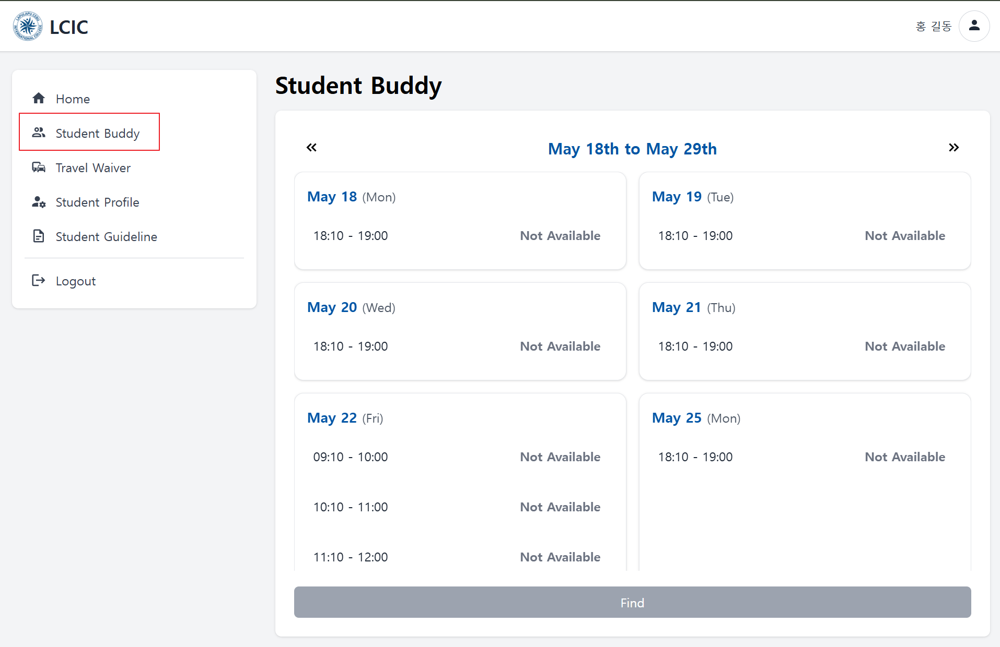
-
2
원하는 주차(week) 선택
상단 날짜 헤더(예: May 18th to May 29th) 좌우의 « · » 버튼으로 원하는 주차로 이동합니다.
-
3
시간대 슬롯 선택
요일별 카드에 표시된 시간대 중 원하는 슬롯을 클릭해 선택합니다.
-
4
Find 버튼으로 신청
시간대를 선택한 뒤 하단의 Find 버튼을 눌러 신청을 진행합니다.
출국 전 체크리스트
모든 입학 절차를 완료한 뒤, 출국 전 아래 11종 항목을 준비해주세요.
필수 서류 3종 + 가져갈 물품 8종.
필수 서류
DOCUMENTS · 3종-
여권 (Passport) 만료일이 출국일 기준 6개월 이상 남아있어야 합니다.
-
여권 사본 인적사항 면 사진 (분실·재발급 대비).
-
왕복 항공권 E-ticket 한국에서 출국할 때 사용. PDF 또는 출력본 형태로 준비합니다.
가져갈 물품
ITEMS · 8종-
USD 현금 ARC·VISA 등 학교 비용 결제 + 도착 직후 환전용.
-
신용카드 (VISA / MASTER) 해외 결제 가능 카드 1매 이상.
-
노트북 Microsoft Teams 수업 진행 및 과제 제출용.
-
헤드셋 / 이어폰 + 마이크 Listening·EF SET·1:1 수업용. 마이크 내장 모델 권장.
-
상비약 / 평소 복용약 감기·지사·소화제 등. 만성질환 약은 처방전과 함께.
-
220V 어댑터 / 멀티탭 필리핀 콘센트는 한국과 동일한 220V (Type A/B/C 혼용).
-
e-Travel QR 코드 출국 72시간 이내 발급. 스크린샷 + 출력본 모두 준비.
-
해외여행자 보험 증서 Insurance Certificate. Upload Tasks에도 업로드 필요.
절차 관련 문의는 학교로 직접 연락주세요.